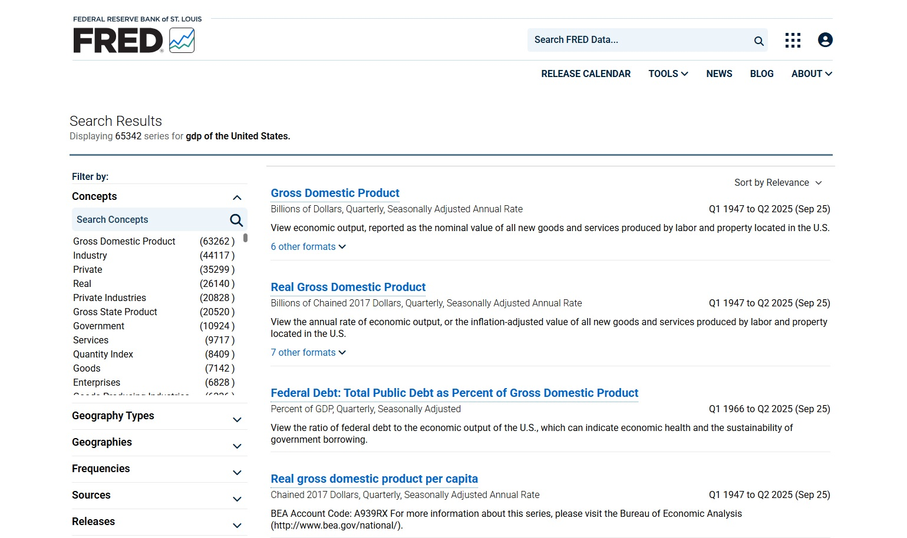
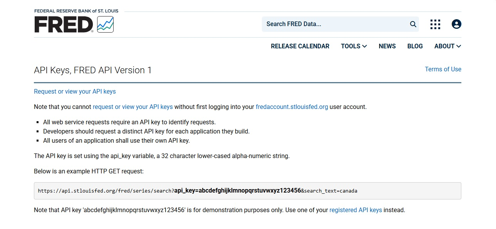
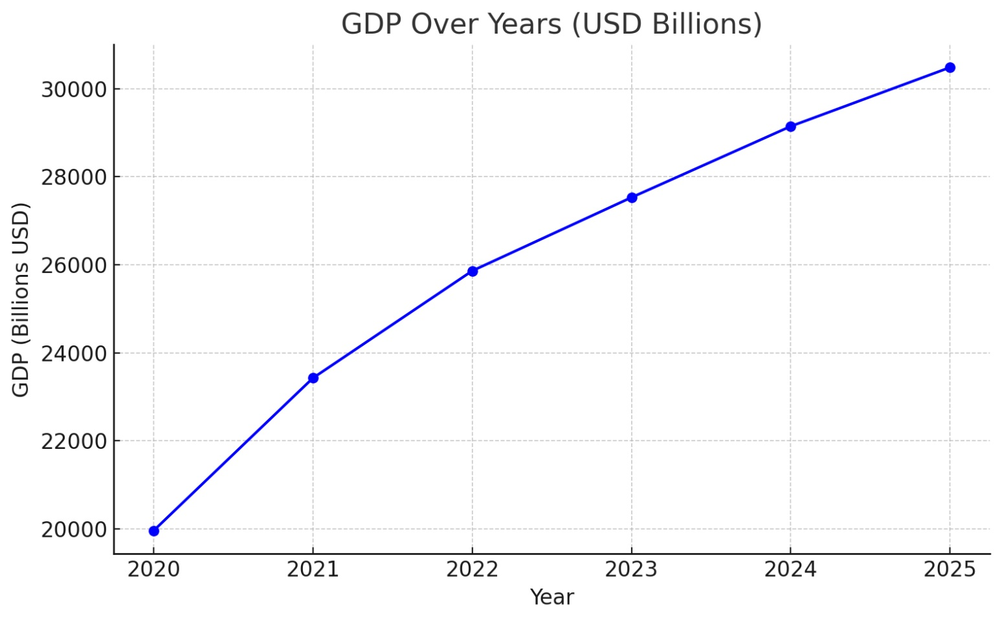

Accessing and Analyzing Data from FRED and DB.nomics
Fresenius University of Applied Science
Scan the QR code for Handout

https://iamerc99.github.io/data-analysis-presentation/
FRED
Federal Reserve Economic Data
FRED is maintained by the Federal Reserve Bank of St. Louis and provides thousands of U.S. and international time-series indicators, including GDP, inflation, employment, interest rates, and financial data (Federal Reserve Bank of St. Louis, 2024).
DB.nomics
DB.nomics is an open global data platform aggregating macroeconomic statistics from sources like Eurostat, OECD, IMF, World Bank, and various national statistical offices (DB.nomics Team, 2024).
FRED vs DB.nomics
| Feature | FRED | DB.nomics |
|---|---|---|
| Focus | US + global indicators | Global statistical datasets |
| Strength | Clean charts, API, US focus | Many providers (Eurostat, OECD, IMF) |
| Best for | Macroeconomics, finance | Country comparisons, international research |
Why Economic Data Matters
- Understanding economic trends
- Making informed decisions
- Working with real-world datasets
- Foundation for research and policy analysis
Student Perspective
- Educational Value
- Research and Projects
- Skill Development
How to Access Data
A. Website Interface
Both platforms offer user-friendly web interfaces for browsing, searching, and downloading data.
These interfaces make it easy for users to find and visualize economic indicators.
You can explore interactive charts, filter data by country or time period, and download results in CSV, Excel, or JSON formats.
FRED: fred.stlouisfed.org

FRED: Search
FRED: View & Download

DB.NOMICS: db.nomics.world

DB.NOMICS: Search

DB.NOMICS: Filters & Download

B. APIs for Automated Access
APIs allow programmatic access to economic datasets, enabling faster, reproducible, and automated analysis (Peng, 2011).
- R specialized packages:
fredr– For accessing U.S. economic data from FRED.rdbnomics– For accessing global datasets from DB.nomics. No API key is needed.
Getting your API key https://fred.stlouisfed.org/docs/api/api_key.html
Request & Describe program you are using

FRED Example
DBNOMICS Example
# Install & load package
install.packages("rdbnomics")
library(rdbnomics)
# Use the full DBnomics series ID
gdp_pc <- rdb(ids = "Provider/Dataset/Series Code")
head(gdp_pc)
plot(
gdp_pc$period, gdp_pc$value,
type = "l",
main = "YOUR TITLE HERE",
xlab = "YOUR X-AXIS LABEL",
ylab = "YOUR Y-AXIS LABEL"
)How to Analyze Data
Option 1: Spreadsheet
Step 1: Download Data
- Go to FRED or DB.nomics.
- Example: GDP of the United States.
- Click Download → CSV or Excel.
Step 2: Open in a Spreadsheet
- Open the file in Excel or Google Sheets.
- You’ll see columns like Year and GDP.
Excel File: 5 year data

Step 3: Create a Simple Chart
- Highlight Year and GDP.
- Make a line chart to see how GDP changes over time.
Example: U.S. GDP Growth (2020–2025)
| Year | GDP (USD Billions) |
|---|---|
| 2020 | 19.96 |
| 2021 | 23.43 |
| 2022 | 25.86 |
| 2023 | 27.53 |
| 2024 | 29.15 |
| 2025 | 30.49 |
Line Chart of GDP 5 Year data
Option 2: Using R Language w/ API key
# install if needed
install.packages("fredr")
install.packages("ggplot2")
library(fredr)
library(ggplot2)
# Set your FRED API key
fredr_set_key("YOUR_API_KEY_HERE")
# GDP data
gdp <- fredr(series_id = "GDP")
# Define series id and time window: last 5 years
series_id <- "GDP"
end_date <- Sys.Date()
start_date <- as.Date(end_date) - (5*365) # approx. 5 years from date
# Fetch the data
gdp_data <- fredr(
series_id = series_id,
observation_start = start_date,
observation_end = end_date
)
# Tibble
head(gdp_data)Visualize data in R
Exercise:
Step into the world of data—analyze, visualize, and discover trends like a pro!
- Choose a topic on FRED.
- Download the data as a CSV.
- Save it in your R project folder.
- Load, analyze, and visualize in R.
Hint:
Using R Language w/out API key
# Install packages
install.packages("ggplot2")
install.packages("readr")
# Load libraries
library(ggplot2)
library(readr)
# Read CSV
gdp_data <- read_csv("file name here") # replace with your filename.csv
# Inspect
head(gdp_data)
# Visualize
ggplot(gdp_data, aes(x = observation_date, y = GDP)) +
geom_line(color = "pick a color") +
labs(title = "US GDP (Quarterly)", x = "Year", y = "Billions of Dollars") +
theme_minimal()